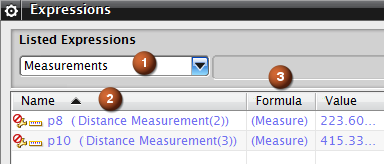
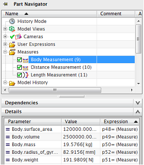

您在表达式对话框中使用测量选项创建的测量为独立测量。
NX 将为各个表达式创建一个测量特征，以便您可以为测量编辑选定的对象，而无需重新创建测量。
|
注释 |
不能编辑测量公式。 |

选择类别列表中的测量类别，将使列表框中只显示测量表达式。
名称列将显示测量特征的类型和时间戳记。
公式列将显示独立测量
部件导航器将在测量节点下方列出测量特征。

您在部件导航器中选择一个测量特征时：
将会在细节面板中列出关联的测量表达式及其值
被测量的特征将会在图形窗口中高亮显示